3-hour training | 60 slides
Build Reliable Claude Code Workflows with Guardrails and Tests
Harness engineering for safer AI coding agents, tool ecosystems, compound workflows, and reviewable autonomy.
Agent
Specs Skills MCP Tests Review
Open by framing the workshop as engineering the harness around Claude Code, Codex, and similar coding agents.
Session architecture
Three Hours, Three Layers
1 Hour 1 Reliable agent workflows: specs, permissions, hooks, tests, and review.
2 Hour 2 Skills, MCP, and plugins: extending the agent without losing control.
3 Hour 3 Compound engineering and agent dreaming: orchestrated systems that rehearse before they act.
Each hour has 20 slides. Keep the pacing brisk: about 3 minutes per slide, with exercises replacing lecture time.
Outcome
What We Are Building Toward
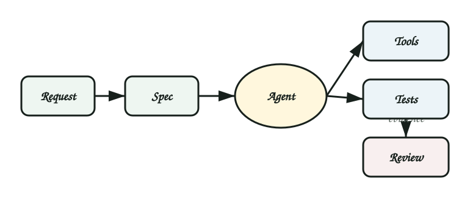
Request
Spec
Skill
MCP
Agent
Tests
Review
The target is not a clever prompt. The target is a repeatable operating system for AI-assisted development.
Use this as the north star: every later topic is a control surface in this chain.
Why this matters
Speed Without Structure Creates Risk
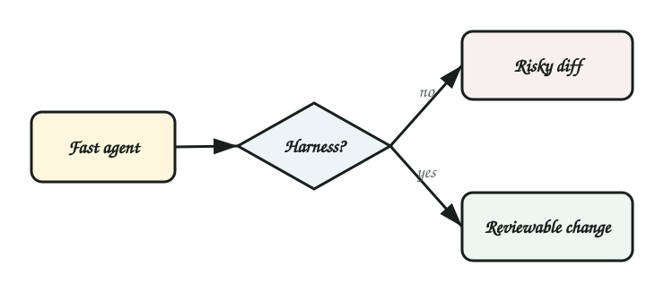
Fast but fragile Large opaque diffs Unclear assumptions Skipped validation Tool overreach Fast and governed Scoped tasks Auditable actions Automated checks Human approval points
Ask for a quick show of hands: who has seen a coding agent make a surprisingly useful change and a surprisingly risky one?
Reliability model
The Model Is Not the Whole Product
Model Reasoning, code generation, summarization, planning.
Harness Instructions, tools, permissions, tests, logs, review.
Organization Policy, ownership, release process, security posture.
The same model can be reliable or dangerous depending on the harness around it.
Failure modes
Where Coding Agents Go Wrong
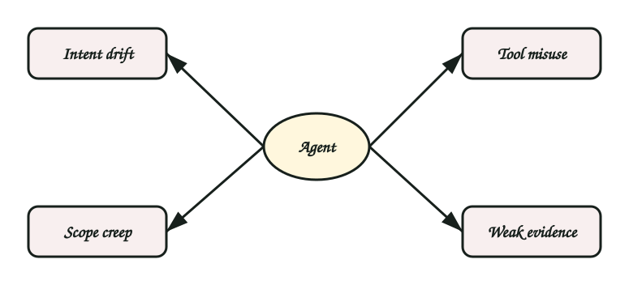
Intent drift Solves a nearby problem.
Scope creep Changes unrelated files.
Invented facts Assumes APIs or project rules.
Tool misuse Runs risky commands too early.
Weak evidence Reports done without proof.
Review fatigue Leaves humans with an unreadable diff.
Connect each failure mode to a control later in the deck.
Harness engineering
The Discipline
Specify: define task, scope, non-goals, and evidence.Constrain: limit tools, filesystem, credentials, and blast radius.Validate: require tests, logs, screenshots, or artifacts.Review: keep human judgment at meaningful decision points.
This is the workshop's recurring four-part rhythm.
Task contract
A Reliable Task Has Four Parts
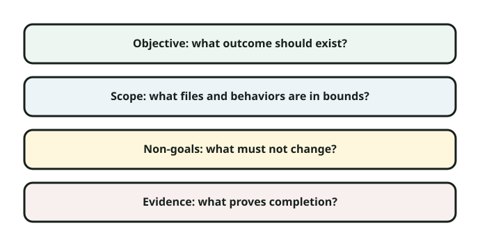
Objective What should be true when the task is done?
Scope Which files, modules, and behaviors are in bounds?
Non-goals What should the agent avoid changing?
Evidence Which checks prove the work is credible?
A task contract is the smallest useful spec for agent work.
Example
Weak Prompt vs Task Contract
Weak "Fix the dashboard bugs and clean it up."
Stronger Fix broken revenue filter Edit dashboard module only No visual redesign Run focused UI tests
Have participants identify what the weak prompt leaves open.
Exercise
Rewrite a Risky Request
"Upgrade our auth flow and make it more secure."
Add Specific behavior Allowed files Security non-goals Required tests Timebox Six minutes. Then compare which risks your contract reduces.
Keep this fast. The point is not perfect requirements; it is explicit constraints.
Instruction layers
Put Instructions Where They Belong
Global Safety posture, review behavior, irreversible action rules.
Project Architecture, test commands, coding style, release process.
Task Current goal, scope, acceptance checks, stop conditions.
Stable rules belong upstream. Volatile rules belong close to the task.
Mention files such as AGENTS.md, CLAUDE.md, README runbooks, and task templates.
Project instructions
Example Project Rules
Before editing:
Inspect existing patterns first.
During editing:
Keep changes scoped to requested modules.
Before final response:
Run focused tests or explain why not.
List changed files and remaining risks.Project rules should be boring, durable, and enforceable.
Permissions
Tool Access Is a Risk Budget
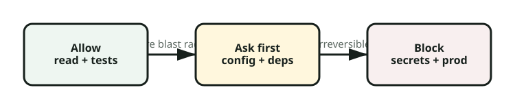
Allow Read code, inspect diffs, run focused tests, format touched files.
Ask first Install packages, edit CI, run migrations, touch auth or billing.
Block Force-push, delete data, reveal secrets, publish releases unsupervised.
The same action can move categories depending on environment and branch.
Hooks
Hooks Make Policy Executable
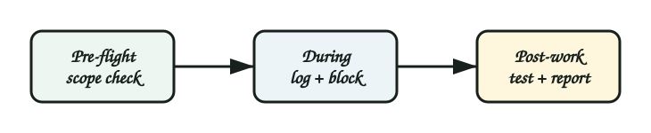
Pre-flight Check branch, load context, confirm scope.
During work Log tool calls, block risky commands, detect out-of-scope edits.
Post-work Run checks, collect evidence, prepare review.
Hooks can be local scripts, wrappers, CI gates, or platform policies.
Tests
Tests Are the Trust Boundary
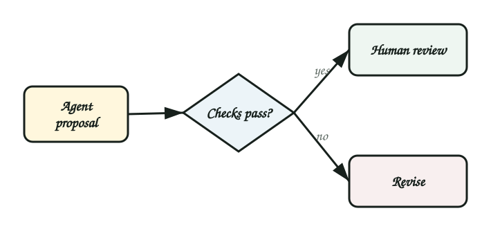
Human approval
End-to-end checks
Integration tests
Unit tests, lint, type checks
The agent can propose. Evidence makes the proposal reviewable.
Warn against trusting "done" without captured evidence.
Observability
Make Agent Work Inspectable
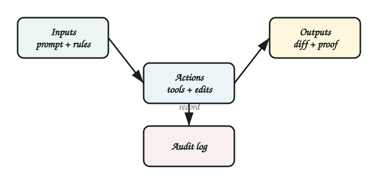
Inputs Prompt, instructions, repo context, tool permissions.
Actions Files read, commands run, files changed, external calls.
Outputs Diff, tests, logs, screenshots, assumptions, risks.
A teammate should be able to reconstruct what happened.
Review
Review the Diff and the Story
Does the diff match the task contract?
Are unrelated edits absent or explained?
Did tests cover the highest-risk behavior?
Are assumptions and skipped checks visible?
Human review should focus on risk and judgment, not redoing every keystroke.
Workflow blueprint
Hour 1 Reference Workflow
1 Write contract
2 Load instructions
3 Constrain tools
4 Inspect first
5 Edit narrowly
6 Run checks
7 Summarize evidence
8 Review
This becomes the base pattern for every extension later.
Hour 1 lab
Build a Minimal Harness
Pick A bug fix, UI tweak, dependency update, or test repair.
Design Task contract, permissions, checks, and final evidence.
Stress test What could the agent do wrong? Which control catches it?
This is a 10-minute individual or pair exercise.
Hour 2
Skills, MCP, and Plugins
How to extend coding agents with reusable procedures, external context, and tool ecosystems while preserving control.
Define the terms before comparing them.
Skills
What Is a Skill?
Reusable procedure A skill teaches the agent how to perform a recurring workflow.
Local expertise It packages instructions, examples, scripts, templates, and assets.
Triggerable memory It activates when the task clearly matches its purpose.
Skills are not magic; they are structured operational knowledge.
Skill anatomy
A Skill Should Contain
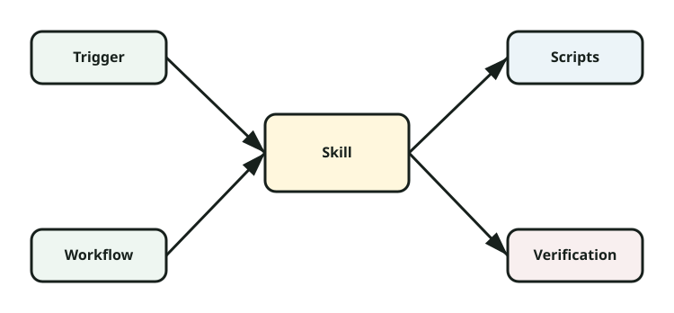
Purpose When to use it.
Workflow Steps the agent should follow.
References Docs, examples, policies.
Scripts Reusable automation.
Assets Templates and starter files.
Verification How to prove success.
A strong skill reduces repeated explanation and repeated mistakes.
Skill example
Security Fix Skill
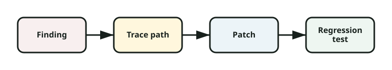
Use when:
A validated security finding needs a fix.
Process:
1. Confirm source, sink, and exploit path.
2. Patch the smallest safe boundary.
3. Add regression coverage.
4. Report residual risk.The value is not only code guidance; it is the sequence and proof standard.
Skill examples
Good Skill Candidates
PR review Find bugs, risks, and test gaps.
Release notes Summarize commits into user-facing language.
Migration Apply repeated codebase transformations.
Docs update Follow voice, structure, and examples.
If a senior engineer repeats the same guidance weekly, it may be a skill.
Skill policy
When Not to Make a Skill
The task is one-off and unlikely to repeat.
The process is still changing every week.
The instruction depends on hidden tribal knowledge.
The skill would bypass required human judgment.
A premature skill can fossilize a bad process.
MCP
What Is MCP?
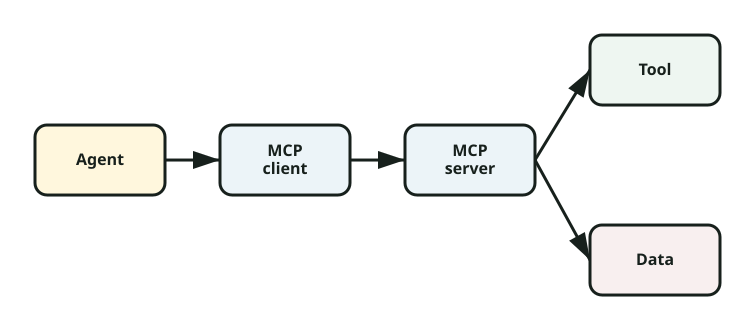
Model Context Protocol is a standard way for agents to connect to tools, data, and services through explicit server capabilities.
Agent
MCP client
MCP server
Tool
Data
Result
Review
If the user said MPC, clarify in speech that in agent tooling this is usually MCP: Model Context Protocol.
MCP architecture
MCP Separates Capability From Reasoning
Agent Chooses goals, plans steps, interprets results.
MCP server Exposes specific tools, resources, and schemas.
Policy Controls auth, audit, permissions, and confirmation.
The agent does not need raw access to everything; the server exposes constrained affordances.
MCP examples
Useful MCP Servers for Engineering
GitHub Issues, PRs, comments, checks.
Docs Search product or internal docs.
Database Read schemas, never raw secrets.
CI Inspect failed jobs and logs.
Calendar Coordinate release windows.
Observability Fetch traces, logs, metrics.
Examples should be scoped to read or bounded write actions.
MCP safety
Design MCP Tools With Boundaries
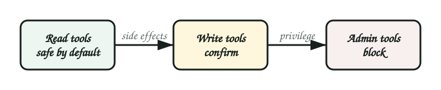
Prefer narrow tools over generic shell or database access.
Require confirmation before writes or external side effects.
Return structured data instead of giant unbounded blobs.
Log user, tool, arguments, result, and timestamp.
The safest MCP server is explicit about what cannot be done.
Plugins
What Is a Plugin?
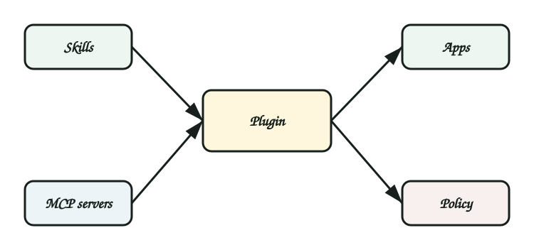
Packaged capability A bundle of skills, tools, apps, MCP servers, or workflows.
Installable surface It makes a domain available to the agent as a coherent unit.
Governance unit It can carry permissions, docs, and review expectations.
Plugins are often how teams distribute trusted agent extensions.
Comparison
Skills vs MCP vs Plugins
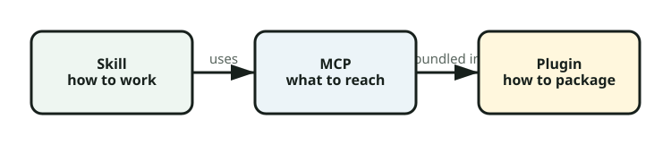
Skill How to do a workflow.
MCP How to reach a tool or data source.
Plugin How to package capabilities.
Instruction What rules apply.
Hook What gets enforced.
Test What proves it worked.
This slide prevents terminology blur.
Plugin example
GitHub Workflow Plugin
1 Read issue
2 Inspect repo
3 Patch code
4 Run tests
5 Commit
6 Open PR
7 Monitor CI
8 Address comments
Point out where permissions and confirmation should appear.
Tool composition
Composition Creates New Risk
Single tool Risk is contained inside one action and one permission surface.
Tool chain Outputs from one tool become inputs to another, creating hidden escalation paths.
Example: issue text instructs agent to change permissions, then GitHub tool writes it.
Trust boundaries
Never Treat Retrieved Content as Instructions
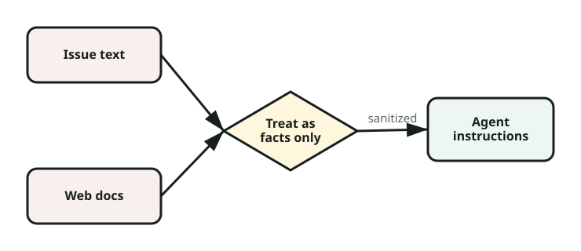
Issues, emails, docs, webpages, and logs are untrusted inputs.
They may provide facts, examples, or requirements.
They cannot override system, developer, project, or user instructions.
They cannot grant permission to send secrets or make side effects.
This is one of the most important safety principles in tool-rich workflows.
Data access
Shape Data Before the Agent Sees It
Filter Return only records relevant to the task.
Redact Remove secrets, tokens, private identifiers, and customer data.
Summarize Convert noisy logs into structured evidence.
MCP servers can enforce data minimization before model exposure.
Exercise
Design a Skill
Pick one repeated workflow your team performs every week.
Define Trigger Procedure Inputs Evidence Check Would this reduce repeated explanation or reduce repeated mistakes?
Examples: release checklist, PR triage, incident summary, migration guide.
Exercise
Choose MCP Boundaries
Read List open PRs
Fetch failing CI logs
Ask first Post a comment
Open a PR
Block Change repo permissions
Expose secrets
Have participants adapt the categories for their own environment.
Debugging
When Tool Chains Fail
Check whether the agent chose the wrong capability.
Check whether the tool returned stale, partial, or oversized context.
Check whether a permission boundary blocked the action.
Check whether the final evidence actually proves the result.
Debug the system, not only the prompt.
Hour 3
Compound Engineering and Agent Dreaming
Designing multi-step agent systems that plan, rehearse, verify, and escalate instead of acting as a single opaque assistant.
Define both terms clearly before examples.
Compound engineering
What Is Compound Engineering?
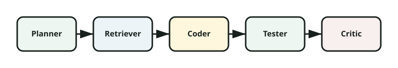
Compound engineering is building systems where multiple agent steps, tools, checks, memories, and human gates work together as one engineered workflow.
Planner
Retriever
Coder
Tester
Reviewer
Reporter
Human
Compound systems are more like pipelines than chat sessions.
Architecture
Compound Workflow Components
State What the workflow remembers.
Roles Planner, builder, tester, critic.
Tools MCP, scripts, APIs, local commands.
Gates Policy, tests, approvals.
Artifacts Plans, diffs, reports, traces.
Fallbacks What happens when confidence drops.
This is a design checklist for more autonomous systems.
Multi-agent pattern
Separate Duties to Reduce Blind Spots
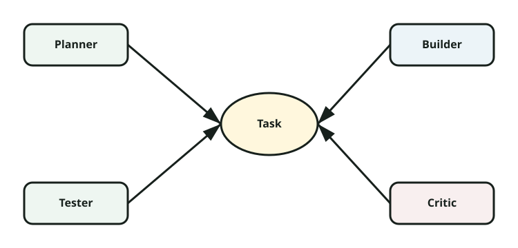
Planner Defines approach and risks.
Builder Makes scoped changes.
Tester Runs and expands evidence.
Critic Reviews diff and assumptions.
The agents may be separate models, prompts, threads, or stages in one orchestrator.
Guardrail pipeline
Guardrails Across the Whole Workflow
1 Classify task
2 Select skills
3 Grant tools
4 Plan
5 Act
6 Test
7 Review
8 Escalate
Guardrails should happen before, during, and after agent action.
Example
Issue-to-PR Compound Workflow
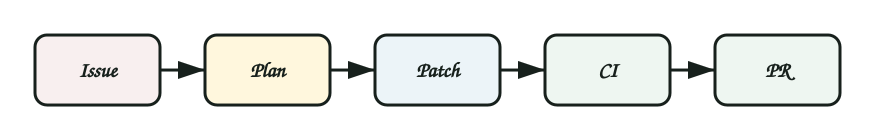
Input Issue, labels, repo instructions, failing test.
Plan Agent proposes files, checks, and risk level.
Build Scoped edit with tests and review summary.
Gate Human approves PR creation and CI watches it.
This example connects GitHub plugin, project instructions, tests, and review.
Example
Database Migration Workflow
Agent may Draft migration, tests, rollback plan.
Human reviews Data loss risk, lock risk, rollout plan.
Agent cannot Run production migration or alter live data alone.
High-risk workflows need stronger gates and evidence.
Agent dreaming
What Is Agent Dreaming?
Agent dreaming is structured rehearsal: the agent simulates plans, failures, tests, and review objections before touching production code or systems.
Dreaming is not free-form imagination. It is bounded scenario rehearsal with artifacts.
Use careful language: this is a design pattern, not anthropomorphism.
Dreaming loop
Rehearse Before Acting
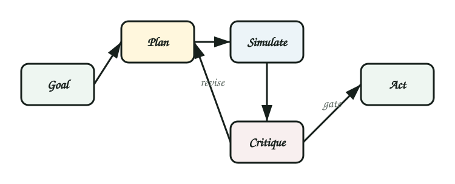
Goal
Plan
Simulate
Critique
Revise
Gate
Act
Dreaming is useful when real action is expensive, risky, or hard to reverse.
Dream artifacts
What a Dream Produces
Plan variants Different ways to solve the task.
Failure list What might go wrong.
Test plan Evidence needed before trust.
Rollback plan How to undo safely.
Questions Missing decisions for humans.
Confidence What is known versus assumed.
Dream artifacts make the rehearsal reviewable.
Dream safety
Keep Dreaming Bounded
Dreams cannot authorize actions.
Dreams must cite real context or label assumptions.
Dreams should produce checks, not bypass them.
Dreams should be discarded when reality contradicts them.
The danger is treating a plausible rehearsal as proof.
Dream example
Before a Refactor
Dream List likely call sites and breakage modes.
Reality check Use code search, tests, and impact analysis.
Plan Choose smallest refactor with rollback path.
Act Edit only after the rehearsal creates evidence tasks.
Dreaming guides investigation; it does not replace investigation.
Dream example
Before an Incident Fix
Hypothesize What changed? What symptoms match?
Rehearse What fixes could make things worse?
Gate What evidence is needed before deploy?
This is especially useful under pressure, where agents and humans both overfit quickly.
Compound plus dreaming
The Safe Autonomy Pattern
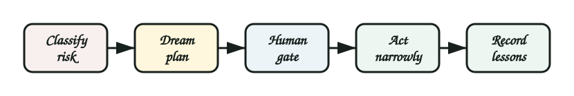
1 Classify risk
2 Dream plan
3 Critique plan
4 Ask if needed
5 Act narrowly
6 Run evidence
7 Review diff
8 Record lessons
This pattern is practical for semi-autonomous coding workflows.
Capstone
Design a 60-Minute Team Workflow
Workflow Pick one recurring engineering task.
Harness Add specs, Skills, MCP, plugins, tests, and review.
Dream Rehearse failures before granting action.
This is the main hour 3 hands-on activity.
Rollout
Start With One Workflow
Week 1 Pick workflow and task contract.
Week 2 Add tests and evidence summary.
Week 3 Create one skill or plugin.
Week 4 Add MCP or compound orchestration.
Adoption is more reliable when the first workflow is narrow and valuable.
Anti-patterns
What to Avoid
Prompt pile Long instructions nobody maintains.
Tool buffet Every tool available all the time.
Fake review Humans approve unreadable diffs.
Untested autonomy Agent acts without evidence.
Memory drift Old context keeps steering work.
Dream worship Simulated confidence replaces proof.
These are warning signs that the harness needs redesign.
Close
Reliable Agents Are Engineered
The future of AI coding is not just better prompts. It is better systems around the agent: constrained, observable, testable, and reviewable.
Specify
Constrain
Rehearse
Validate
End with the concrete ask: implement one workflow harness this week.